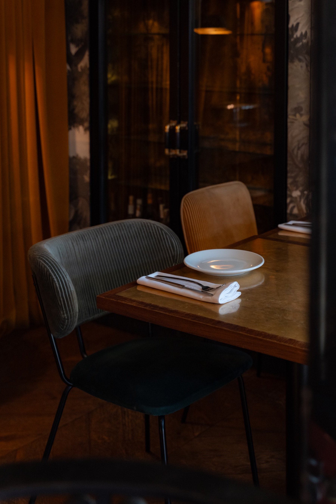
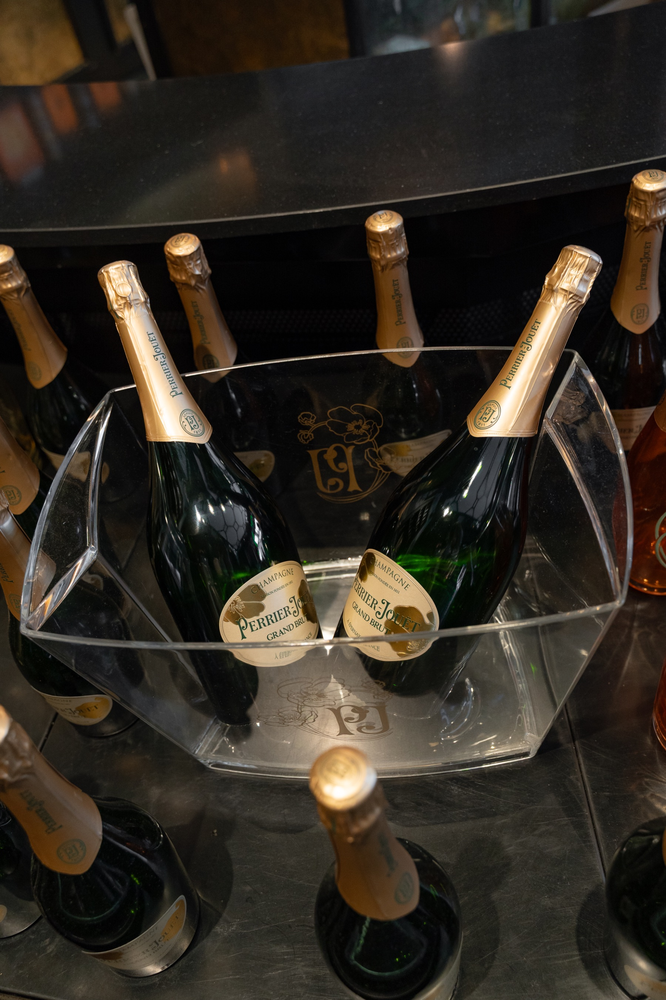
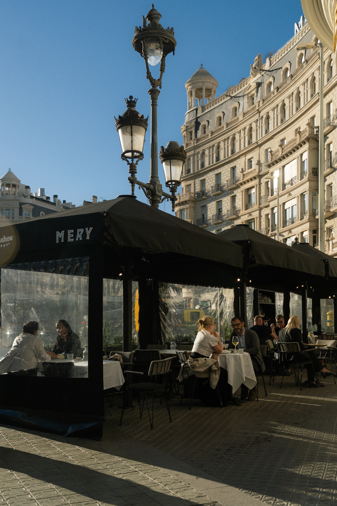

Comidas o cenas privadas
Reservados para comidas importantes de trabajo o sobremesas largas, con menú cerrado y maridaje.
Ver menús de grupoCada celebración es distinta y así la tratamos. Desde una presentación de producto o una cena de equipo hasta un aniversario íntimo o un after work en la terraza: diseñamos el espacio, el menú y la barra a la medida de lo que tengas en mente.
Reservados privados, menús cerrados con maridaje y barra de champagne para grupos de 8 a 60 personas.

Reservados para comidas importantes de trabajo o sobremesas largas, con menú cerrado y maridaje.
Ver menús de grupo
Cócteles de autor y selección Perrier-Jouët y las marcas Pernod Ricard para aperitivos, comidas o brindis de noche.
Ver menús de grupo
Cócteles y picoteo en la mejor terraza de Francesc Macià para after works o celebraciones especiales.
Ver menús de grupoConsulta nuestras propuestas cerradas para grupos, con entrantes al centro, principal a elegir y postre.
Ver menús de grupoCuéntanos tu idea y la hacemos realidad.